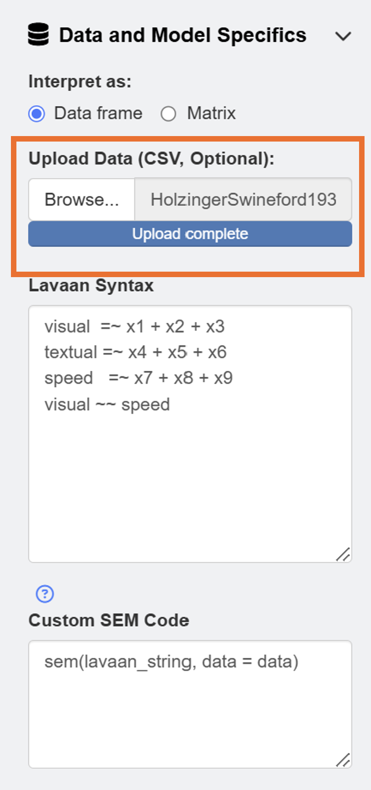
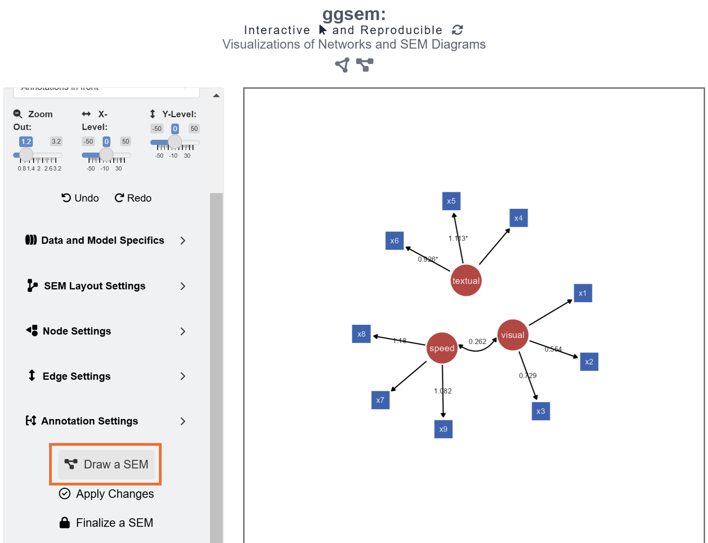
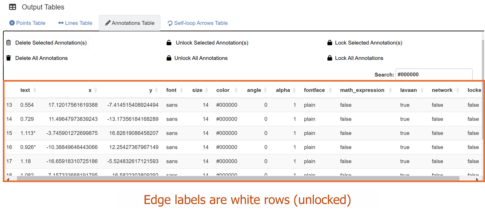
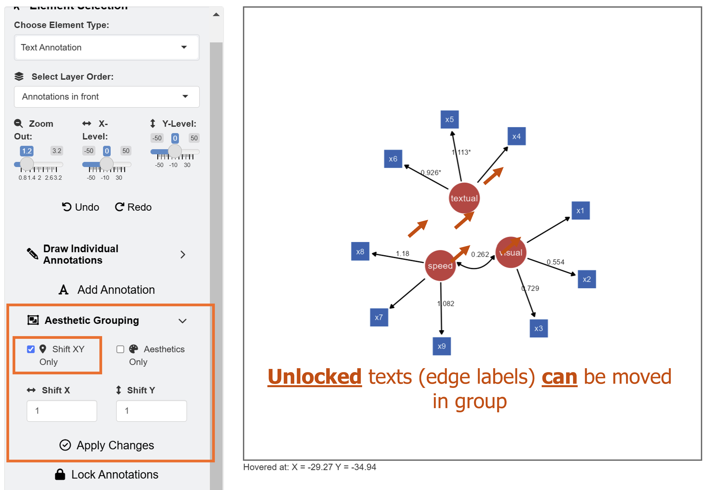
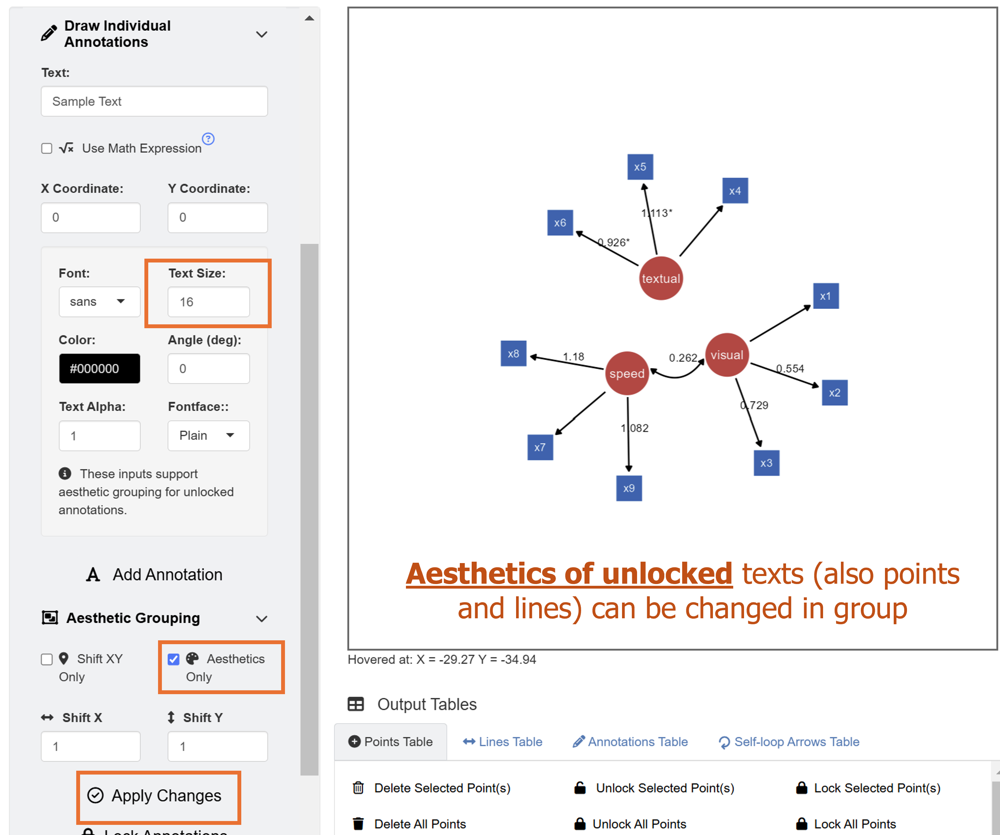
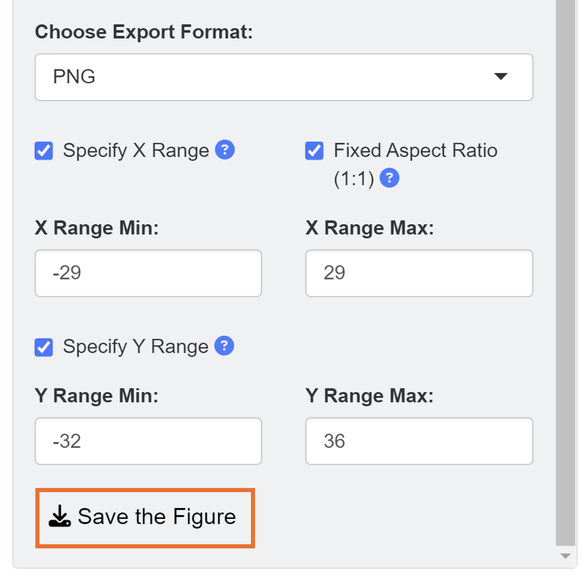
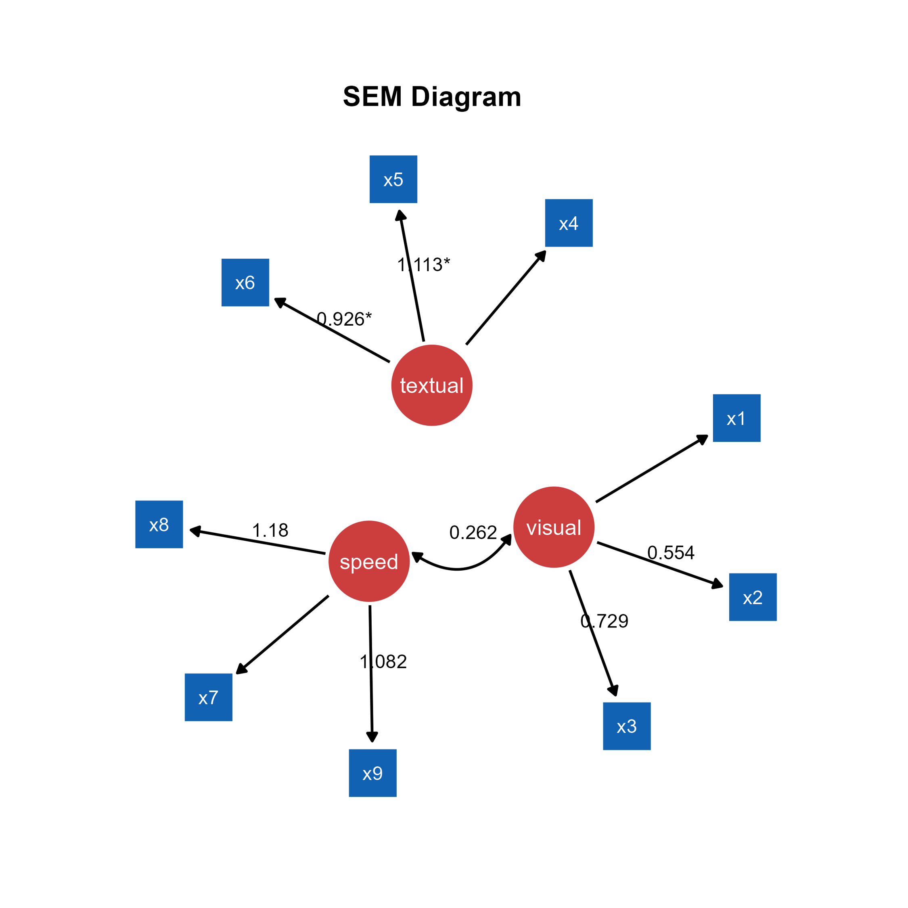

In this chapter, we will visualize path diagrams from structural equation modeling (SEM) with data files.
Data Formats
The ggsem web application accepts two types of CSV files for plotting SEM diagrams: data frame and matrix. The examples are shown here.
Basically, the data files should be able to understood by the lavaan package. Let’s load data from the lavaan package.
library(tidyverse)
library(ggsem)
library(lavaan) # install.packages('lavaan')
head(PoliticalDemocracy)
#> y1 y2 y3 y4 y5 y6 y7 y8 x1
#> 1 2.50 0.000000 3.333333 0.000000 1.250000 0.000000 3.726360 3.333333 4.442651
#> 2 1.25 0.000000 3.333333 0.000000 6.250000 1.100000 6.666666 0.736999 5.384495
#> 3 7.50 8.800000 9.999998 9.199991 8.750000 8.094061 9.999998 8.211809 5.961005
#> 4 8.90 8.800000 9.999998 9.199991 8.907948 8.127979 9.999998 4.615086 6.285998
#> 5 10.00 3.333333 9.999998 6.666666 7.500000 3.333333 9.999998 6.666666 5.863631
#> 6 7.50 3.333333 6.666666 6.666666 6.250000 1.100000 6.666666 0.368500 5.533389
#> x2 x3
#> 1 3.637586 2.557615
#> 2 5.062595 3.568079
#> 3 6.255750 5.224433
#> 4 7.567863 6.267495
#> 5 6.818924 4.573679
#> 6 5.135798 3.892270The first example of data frame PoliticalDemocracy has a
first column with id, where it identifies each row. This is a common
feature for datasets to be analyzed in lavaan.
head(HolzingerSwineford1939)
#> id sex ageyr agemo school grade x1 x2 x3 x4 x5 x6
#> 1 1 1 13 1 Pasteur 7 3.333333 7.75 0.375 2.333333 5.75 1.2857143
#> 2 2 2 13 7 Pasteur 7 5.333333 5.25 2.125 1.666667 3.00 1.2857143
#> 3 3 2 13 1 Pasteur 7 4.500000 5.25 1.875 1.000000 1.75 0.4285714
#> 4 4 1 13 2 Pasteur 7 5.333333 7.75 3.000 2.666667 4.50 2.4285714
#> 5 5 2 12 2 Pasteur 7 4.833333 4.75 0.875 2.666667 4.00 2.5714286
#> 6 6 2 14 1 Pasteur 7 5.333333 5.00 2.250 1.000000 3.00 0.8571429
#> x7 x8 x9
#> 1 3.391304 5.75 6.361111
#> 2 3.782609 6.25 7.916667
#> 3 3.260870 3.90 4.416667
#> 4 3.000000 5.30 4.861111
#> 5 3.695652 6.30 5.916667
#> 6 4.347826 6.65 7.500000The second example of data frame HolzingerSwineford1939
also has a first column with id, where it identifies each row. Other
column names refer to each variable (observed or latent).
If you plan to use your custom data files, please make sure they have similar structures as those in these two examples.
You can download the datasets into your directory using these codes:
df1 <- read.csv('https://www.smin95.com/HolzingerSwineford1939.csv', check.names = FALSE)
write_csv(df1, 'HolzingerSwineford1939.csv')
df2 <- read.csv('https://www.smin95.com/PoliticalDemocracy.csv', check.names = FALSE)
write_csv(df2, 'PoliticalDemocracy.csv')Another format of data frame that ggsem recognizes is matrix, as shown below. This is directly from the example in lavaan’s documentation website (https://lavaan.ugent.be/tutorial/cov.html).
lower <- '
11.834
6.947 9.364
6.819 5.091 12.532
4.783 5.028 7.495 9.986
-3.839 -3.889 -3.841 -3.625 9.610
-21.899 -18.831 -21.748 -18.775 35.522 450.288 '
wheaton.cov <-
getCov(lower, names = c("anomia67", "powerless67",
"anomia71", "powerless71",
"education", "sei"))
wheaton.cov
#> anomia67 powerless67 anomia71 powerless71 education sei
#> anomia67 11.834 6.947 6.819 4.783 -3.839 -21.899
#> powerless67 6.947 9.364 5.091 5.028 -3.889 -18.831
#> anomia71 6.819 5.091 12.532 7.495 -3.841 -21.748
#> powerless71 4.783 5.028 7.495 9.986 -3.625 -18.775
#> education -3.839 -3.889 -3.841 -3.625 9.610 35.522
#> sei -21.899 -18.831 -21.748 -18.775 35.522 450.288There are few things that are noticeable from the matrix. The first element (row 1, column 1) is empty. The first column has names for variables. The column names match the names of the rows. The matrix has a symmetrical structure. This structure of matrix is recognized by the lavaan package, which ggsem uses to perform statistical analyses. Make sure to upload CSV file with this matrix structure in ggsem.
matrix_example <- as.matrix(read.csv('https://www.smin95.com/wheaton_cov.csv',
row.names = 1, check.names = FALSE))
matrix_example
#> anomia67 powerless67 anomia71 powerless71 education sei
#> anomia67 11.834 6.947 6.819 4.783 -3.839 -21.899
#> powerless67 6.947 9.364 5.091 5.028 -3.889 -18.831
#> anomia71 6.819 5.091 12.532 7.495 -3.841 -21.748
#> powerless71 4.783 5.028 7.495 9.986 -3.625 -18.775
#> education -3.839 -3.889 -3.841 -3.625 9.610 35.522
#> sei -21.899 -18.831 -21.748 -18.775 35.522 450.288ggsem Application
Let’s open the application and visualize a SEM diagram with the data.
ggsem()First, readers should download data from https://www.smin95.com/HolzingerSwineford1939.csv and load it on the app in the Data and Model Specifics menu of SEM Data. We check box for Data frame so that our data file is interpreted correctly.

After loading the data, users can draw a SEM by clicking the Draw a SEM button.

The default color of the latent nodes is red, that of the observed nodes is blue, and the that of the node label is white. However, these can be modified using input menu in Node Settings and Edge Settings. Apply aesthetic changes to the existing SEM diagram using the Apply Changes button.

Unlike in Chapter 3, where we drew a SEM diagram without data, we have drawn a SEM diagram with data, allowing the ggsem to perform statistical analyses. Hence, the SEM diagram has edge labels with parameter estimate values computed from the lavaan package. Those with statistical significance (p < 0.05) are labelled with asterisks (*). These graphical outputs can be accessed in the Annotations table below the plotting space. The rows representing the edge labels have white color rather than red because these are unlocked.
Notice that the default model syntax actually agrees with the data frame in this example. So, if you decide to use your own data, make sure to change the lavaan model. If you decide to use matrix as data file, make sure to change your Custom SEM Code as:
sem(lavaan_string, sample.cov = data, sample.nobs = ..., ...)In the ggsem app, lavaan_string stores
your syntax input, data object stores the data you have
uploaded. So, if these two things get changed in Custom SEM
Code, error will occur. While these things should remain
unchanged, other arguments can be added for specific analyses, such as
sample.cov and sample.nobs to fit the model
(lavaan_string) with a covariance matrix data.
Their unlocked status (from their locked column) allows users to group them aesthetically and modify their X and Y positions at once. To do it, go to Text Annotation menu. Make sure Shift XY Only is checked in the Aesthetics Grouping sub-menu.

In this example, we will shift the position of X and Y by a unit of 1. After inputing these values, click the Apply Changes button.
It is important to remember that Apply Changes
button changes aesthetics of elements whose lavaan
column is set to TRUE. So, other elements drawn separately
(from individual points to network diagrams) will not be influenced.

Next, we will perform another modification using aesthetic grouping. We will enlarge the edge labels slightly. Under Draw Individual Annotations menu, input Text Size as 16. For Aesthetic Grouping, check Aesthetics Only to change aesthetics of unlocked annotations in group.
Finally, we add text annotation SEM Diagram at X = -2, Y = 32 with text size = 23 and fontface = bold by clicking the Add Annotation button in the Text Annotations menu.
When saving as a png file, users can select the x range and y range of the figure to remove surrounding white space. We set the range of X axis from -29 to 29 and Y axis from -32 to 36.

This is the final png image after removing unnecessary white space from the ggsem application without any coding.

This can be produced with codes using the function
adjust_axis_range() as shown below. In fact, the
ggsem app uses this function to save figure
outputs.
# Don't run. Not a real code.
plot <- csv_to_ggplot(...)
plot_adjusted <- adjust_axis_range(plot,
x_range = c(-29, 29),
y_range = c(-32, 36),
fixed_aspect_ratio = TRUE)
save_figure("fig6g.png", plot_adjusted) # same as the app